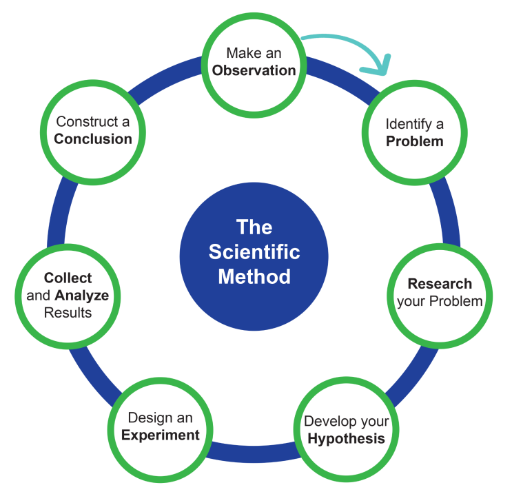

Research is the scientific method
July 2, 2026
In one sentence,
what is the most important aspect of research?

A research question is a complex sentence containing:
A clause constitutes:
Example question: How can we stop malaria?
| IF | THEN | BECAUSE |
|---|---|---|
| If gene-drive mosquitos are released in the wild | Then the pathogenic protozoa population will be eliminated | because the gene drive methods beneficially selects gene-drive mosquitos for breeding and uses two separate protozoan targets to eliminate protozoa in mosquitos. |
| Table | ||||
| Empty of data | ||||
| Column_1 | Column_2 | Column_3 | Column_4 | |
|---|---|---|---|---|
| 1 | ||||
| 2 | ||||
| 3 | ||||
| 4 | ||||
| No data available for the current selection. | ||||
| Standard Data Types in R | ||||
| A demonstration of Character, Integer, Double, and Logical types | ||||
| String | Int | Flt | Bool | |
|---|---|---|---|---|
| 1 | Hello | 1 | 0.35 | TRUE |
| 2 | Hi | 3 | 0.50 | FALSE |
| 3 | hi | 5 | 1.03 | TRUE |
| 4 | Morning | 100 | 2.14 | TRUE |
| Data types mapped using standard R vectors. | ||||
| Typical dataframe in R | ||||
| A demonstration of metadata | ||||
| greeting_used | count | norm_count | presented_w_smile | |
|---|---|---|---|---|
| 1 | Hello | 1 | 0.35 | TRUE |
| 2 | Hi | 3 | 0.50 | FALSE |
| 3 | hi | 5 | 1.03 | TRUE |
| 4 | Morning | 100 | 2.14 | TRUE |
| The datatypes are still here too! | ||||
Data, Metadata, and Ethics